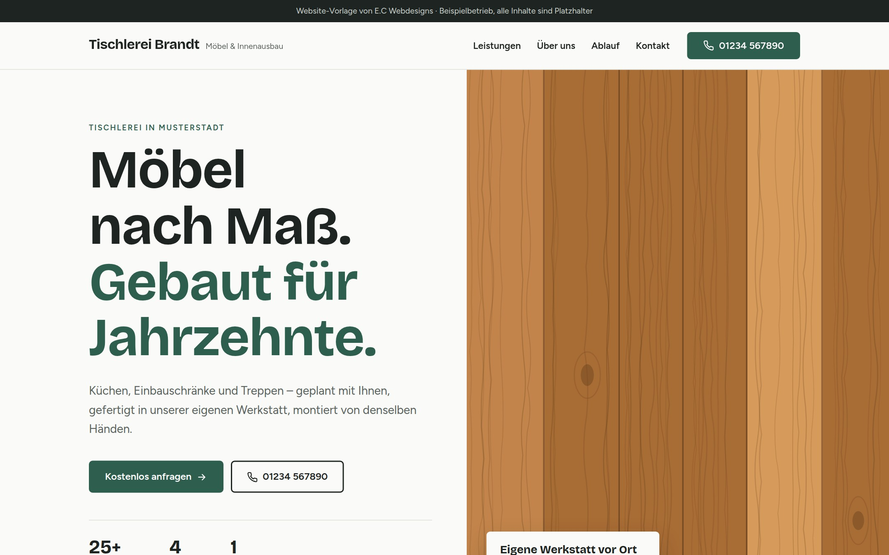
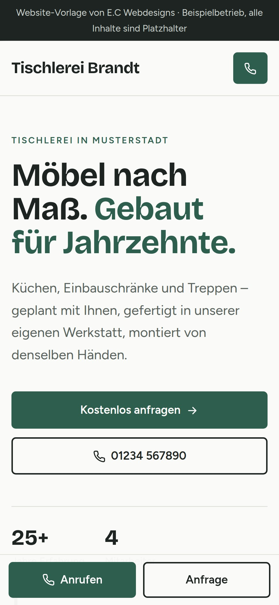
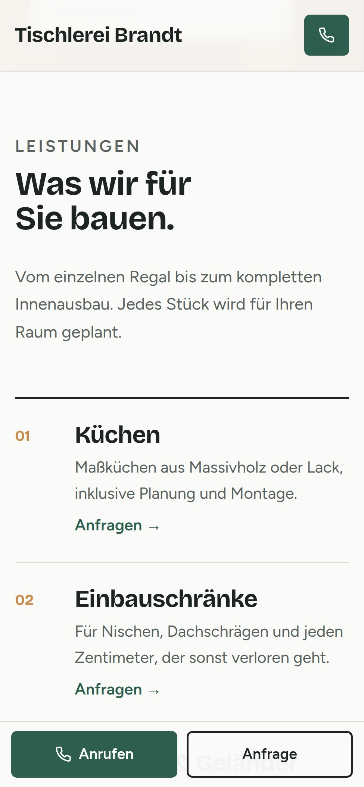

Neu hier
Webdesigns
Ob Handwerk, Praxis, Laden oder Dienstleister: klar aufgebaut, schnell geladen, gemacht, damit Kunden sich melden.
Beispielprojekt
Ihre Website zeigt, wer Sie sind, was Sie können und wie man Sie erreicht – auf einen Blick.

Mobil zuerst


Inklusive
So einfach geht's
Kurzes GesprächSie erzählen von Ihrem Unternehmen.
Entwurf ansehenSie sehen Ihre Seite, bevor Sie sich entscheiden.
Online gehenWir kümmern uns um die Technik.
Webdesigns